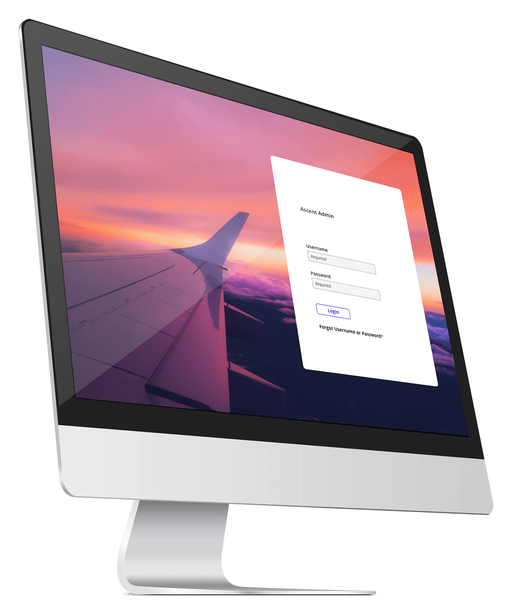
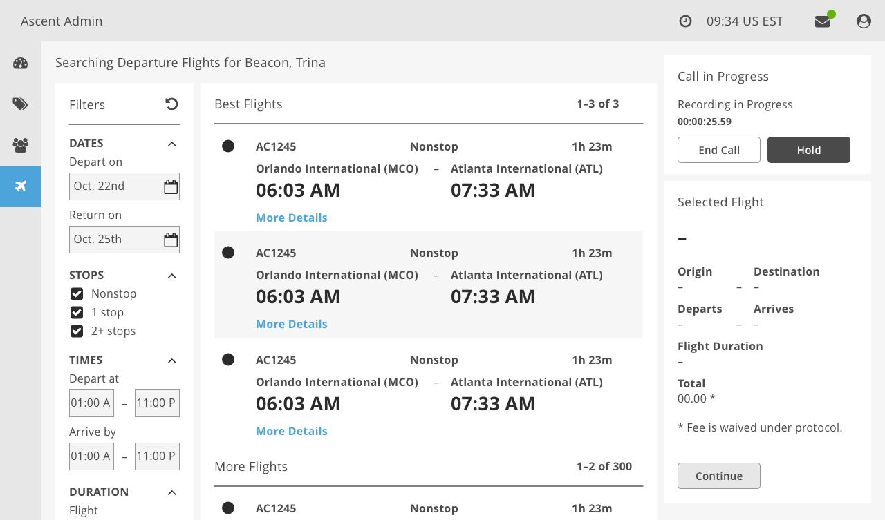

Ascent Airlines
Challenge
Airline operations require a consistent integration of back office and end consumer facing applications. Gaps between these touchpoints prove frustrating for travelers who need to rebook.
Solution
Based on user research and secondary airline research, Ascent Airlines design explores how airline operations can improve from a service design perspective.

Visual Design

Customer Journey Map

Service Blueprint

Wireframe
